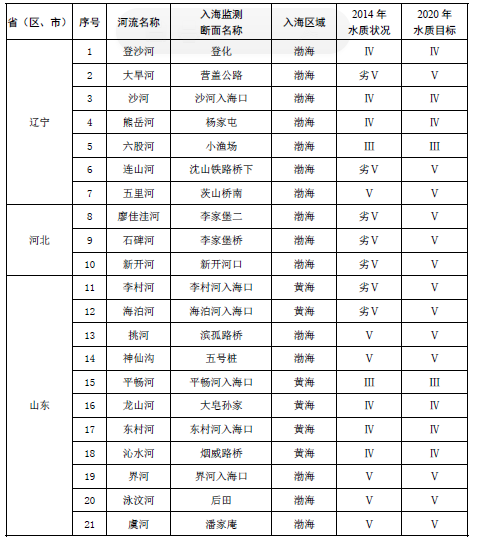
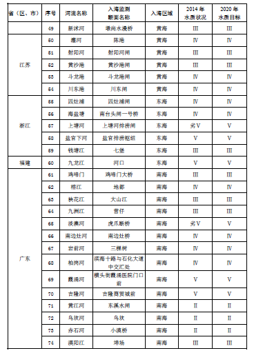
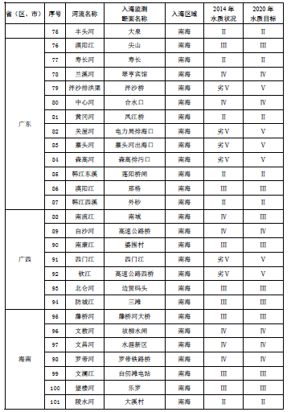
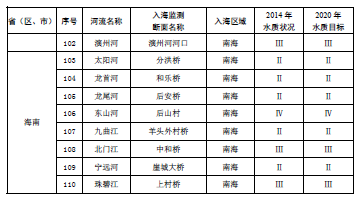
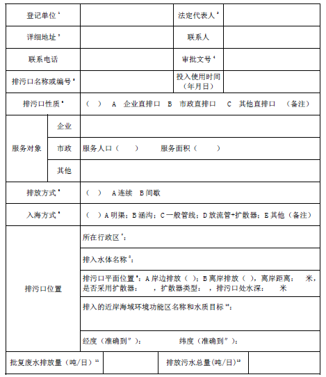
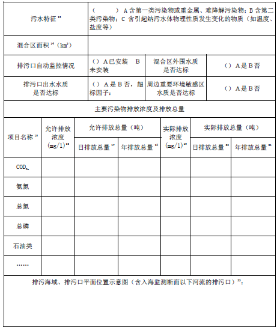
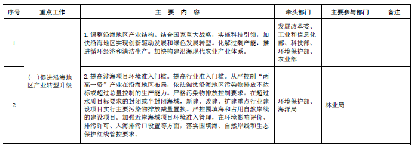
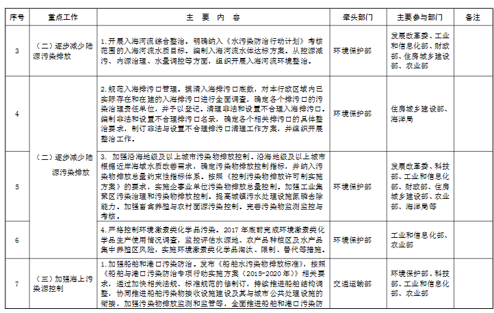
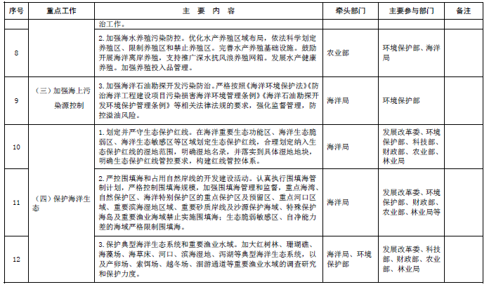
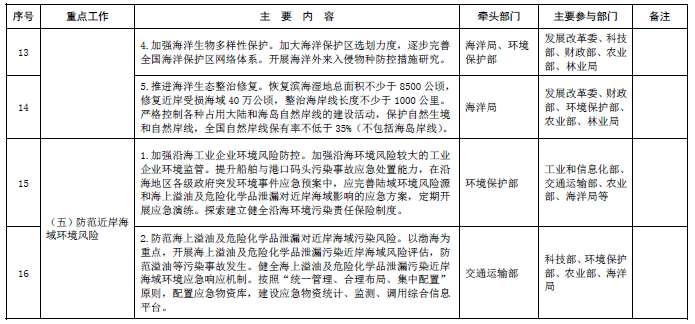

《近岸海域污染防治方案》

（格式）

《近岸海域污染防治方案》 |
| 一、基本形势 |
| 我国位于太平洋西岸，既是陆地大国也是海洋大国，拥有辽阔的管辖海域、漫长的海岸线和众多的岛礁。近岸海域是陆地和海洋两大生态系统的交汇区域，陆地和海洋环境因素都对近岸海域环境质量有着十分重要而深远的影响。近岸海域环境质量状况及变化趋势，综合反映了各类涉海排污行为的强度和污染防治工作的成效。 |
| 做好近岸海域污染防治工作，不仅可以改善海洋生态环境质量，而且能够促进陆域、海域产业结构和空间布局优化，带动各相关行业的生产技术和治污技术进步，有利于实现陆海统筹和区域间的均衡、协调、可持续发展 |
| 海洋在海陆水循环中的作用，使其成为众多污染物的最终归宿。随着经济快速发展和生活水平的提高，以各种方式、通过各种途径排入近岸海域的污染物总量居高不下，近岸海域的环境质量状况不容乐观。 |
| 2011 年至2015 年，我国近岸海域环境质量总体保持稳定，水质优良（一、二类）比例平均为67.0%，劣四类海水水质比例平均为18.0%。其中，渤海水质有所好转，一、二类水质比例上升14.3%，劣四类水质比例下降4.1%；黄海水质总体状况良好，一、二类水质比例上升5.6%，同时劣四类水质比例上升3.7%；东海水质状况极差，且总体呈恶化趋势，一、二类水质比例稳定，劣四类水质比例上升4.3%；南海水质状况良好，一、二类水质比例上升12.7%，劣四类水质比例下降2.0%。195 条入海河流中，有43 条河流入海断面水质为劣V类。401 个直接向海洋排放污（废）水的排污口（排水量大于100吨/天）年排水总量持续增加，2015 年达到62.45 亿吨，比2011 年增加了32%，受纳污（废）水的比例渤海为4%、黄海为17%、东海为63%、南海为16%。局部海域典型生态系统受损严重，其中红树林面积自上世纪50 年代以来减少了70%以上，珊瑚礁面积相比上世纪70年代累计丧失了80%，自然岸线占大陆岸线长度的比例已不足50%，近岸海域生态破坏形势严峻。 |
| 为落实《水污染防治行动计划》，改善近岸海域环境质量状况，维护海洋生态安全，切实加强近岸海域环境保护工作，制定本方案。 |
| 二、指导思想与目标 |
| （一）指导思想 |
| 全面贯彻落实党中央、国务院关于生态文明建设的总体部署，细化落实《水污染防治行动计划》关于近岸海域污染防治的目标和任务要求。以改善近岸海域环境质量为核心，加快沿海地区产业转型升级，严格控制各类污染物排放，开展生态保护与修复，加强海洋环境监督管理，为我国经济社会可持续发展提供良好的生态环境保障。 |
| （二）基本原则 |
| 质量导向，保护优先。以改善近岸海域环境质量为导向，各项任务措施紧密结合改善环境质量需要，确保水质“只能更好、不能变差”。坚持保护优先，绿色发展，以近岸海域水质改善促进区域产业结构和空间布局优化，提高环境污染治理水平。河海兼顾，区域联动。按照“从山顶到海洋”“海陆一盘棋”的理念，统筹陆域和海域污染防治工作，推动生态保护区域联动，增强近岸海域污染防治和生态保护的系统性、协同性。 |
| 突出重点，全面推进。“十三五”期间，以综合整治黄河口、长江口、闽江口、珠江口、辽东湾、渤海湾、胶州湾、杭州湾、北部湾等海域污染为重点，推进近岸海域污染防治工作，提高工作水平和成效。 |
| 综合防治，精准施策。针对各海域环境问题的特点，合理设计防治方案，管理措施与工程措施并举，生态系统自然修复与人工修复相结合，提高污染源排放控制和入海河流水质管理的精细化水平。 |
| （三）主要目标 |
| “十三五”期间，全国近岸海域水质稳中趋好；2020 年沿海各省（区、市）近岸海域一、二类海水比例达到目标要求，全国近岸海域水质优良（一、二类）比例达到70%左右；入海河流水质与2014 年相比有所改善，且基本消除劣于V类的水体。 |
| 2017 年底前，全面清理非法或设置不合理的入海排污口；近岸海域汇水区域内的城镇污水处理设施全面达到一级A排放标准（含总氮指标）；研究制订重点海域污染物总量控制技术指南。2020 年底前，沿海地级及以上城市根据地区环境容量、排污许可证发放情况等完成工业固定污染源总氮削减任务；海洋国土空间的生态保护红线面积占沿海各省（区、市）管辖海域总面积的比例不低于30%；全国大陆自然岸线保有率不低于35%，全国湿地面积（含滨海湿地）不低于8 亿亩，湿地面积不减少；全国海水养殖面积控制在220 万公顷左右。 |
| 三、重点任务 |
| （一）促进沿海地区产业转型升级 |
| 1. 调整沿海地区产业结构 |
| 结合“一带一路”建设、京津冀协同发展、长江经济带建设等国家重大战略，实施科技引领，加快沿海地区实现创新驱动发展和绿色发展转型。加快化解船舶、钢铁、水泥等行业过剩产能，推动产业升级，引领新兴产业和现代服务业发展。加快构建沿海现代农业产业体系，优化海水养殖业空间布局。加强工业企业园区化建设，推进循环经济和清洁生产，积极建设生态工业园区，加强资源综合利用和循环利用，实施工业园区废水集中处理。 |
| 2. 提高涉海项目环境准入门槛 |
| （1）提高行业准入门槛。从严控制“两高一资”产业在沿海地区布局，严格执行环境保护和清洁生产等方面的法律法规标准和重点行业环境准入条件，从产业结构、布局、规模、区域环境承载力、与相关规划的协调性等方面，严格项目审批，提高行业准入门槛；依法淘汰沿海地区污染物排放不达标或超过总量控制要求的产能。 |
| （2）严格污染物排放控制要求。针对当前海洋环境污染问题的特点，严格执行国家和地方污染物排放标准，强化工业企业总氮和总磷等污染物负荷削减。在超过水质目标要求、封闭性较强的海域，实行新（改、扩）建设项目主要污染物排放总量减量置换。 |
| （3）严控围填海和占用自然岸线的建设项目。严格按照海洋主体功能区规划、海洋功能区划、近岸海域环境功能区划和生态保护红线要求，加强近岸海域建设项目环境准入管理，在环境影响评价、排污许可、入海排污口设置等方面，落实围填海、自然岸线和生态保护红线管控要求。 |
| （二）逐步减少陆源污染排放 |
| 1. 开展入海河流综合整治 |
| （1）明确入海河流整治目标和工作重点。开展主要入海河流综合整治，到2020 年，纳入《水污染防治行动计划》考核范围的入海河流达到水质目标要求（河流名单及水质目标见附1）；将水质劣于V类的入海河流作为各海区整治工作的重点，包括渤海海域的大旱河等6 条河流、黄海海域的李村河等7 条河流、东海海域的上塘河和南海海域的淡澳河等7 条河流。除此之外，沿海各省（区、市）应对本行政区域内其他入海河流（包括季节性河流）情况进行全面调查、登记，开展入海断面水质监测，根据水环境功能要求，自行确定水质目标，明确环境质量责任。相关管理部门共享入海河流调查登记信息。 |
| （2）编制入海河流水体达标方案。对入海监测断面水质尚未达到沿海省（区、市）《水污染防治目标责任书》水质目标要求的入海河流，沿海各省（区、市）应参照《水体达标方案编制技术指南》（环办污防函〔2016〕563 号），编制本省（区、市）《入海河流水体达标方案》；对于其他入海河流，沿海各省（区、市）可视需要编制《入海河流水体达标方案》。入海河流水体达标方案要客观分析入海河流环境压力，识别主要环境问题，提出年度任务和年度目标，做好与流域控制单元污染防治工作的衔接。在有条件的情况下，可进行污染源-排污口-水体的输入响应分析，测算污染物允许排放量，结合水污染治理的技术经济可行性，明确阶段性污染负荷削减目标，提出切实可行的整治工程清单，实现“一河一策”精准治污。 |
| （3）组织开展入海河流整治。全面落实河长制，从控源减污、内源治理、水量调控等方面，因地制宜地采取工程和管理措施，充分考虑与已批准的相关规划文件衔接。加强组织领导，加大环境监督管理力度，建立长效管理机制，确保入海河流水质逐步改善。在有条件的情况下，采用水环境模型预测污染治理措施的水质改善效果，优化工程项目布局与规模。 |
| （4）时间进度安排。沿海各省（区、市）按照“一河一策”的原则，在调查研究基础上尽快编制完成《入海河流水体达标方案》。2018 至2020 年，在《入海河流水体达标方案》实施过程中，沿海各省（区、市）逐年对入海河流水质状况、治理成效、工程项目建设与运行、环境监督管理、长效机制建设、投融资模式等情况进行总结分析，形成年度工作报告。 |
| 2. 规范入海排污口管理 |
| （1）摸清入海排污口底数。清理入海排污口的范围，包括陆地和海岛上所有直接向海域排放污（废）水的排污口和排污沟（渠）。沿海各省（区、市）对本行政区域内已建成和在建的入海排污口进行全面调查，确定各个排污口的污染治理责任单位，并予以登记（登记表格式见附2）；对近岸海域汇水区域内的城镇污水处理设施进行登记（登记表格式见附3），判定非法和设置不合理入海排污口（判定条件见附4）；在有条件的地方，可以入海排污口为起点，溯源排查管道布设情况。 |
| （2）清理非法和设置不合理入海排污口。沿海各省（区、市）应编制非法和设置不合理排污口名录，确定各个排污口的具体整治要求，制订非法与设置不合理排污口清理工作方案，并组织开展整治工作，根据实际情况，依法处理。 |
| （3）时间进度安排。2017 年6 月底前，沿海各省（区、市）完成本行政区域内排污口摸底排查工作，制定非法与设置不合理排污口清理工作方案（含排污口名单），编制完成近岸海域汇水区域（沿海地级及以上城市）城镇污水处理设施清单。2017 年底前，完成非法与设置不合理入海排污口的清理工作。2018 年2 月底前，沿海各省份编制完成入海排污口清理工作报告（含排污口名单）和近岸海域汇水区域内的城镇污水处理设施达标情况报告（含设施名单）。 |
| 3. 加强沿海地级及以上城市污染物排放控制 |
| （1）科学确定污染物排放控制目标 |
| “十三五”期间，沿海地级及以上城市根据近岸海域水质改善需求，结合水域纳污能力，围绕无机氮等首要污染物，因地制宜地确定污染物排放控制指标，并纳入污染物排放总量约束性指标体系。按照《控制污染物排放许可制实施方案》的要求，改变单纯的以行政区域为单元分解污染物排放总量指标的方式，通过差别化和精细化的排污许可证管理，落实企事业单位污染物排放总量控制要求，逐步实现由行政区污染物排放总量控制，向企事业单位污染物排放总量控制转变。 |
| 对于工业固定污染源，2017 年底前，沿海地级及以上城市按照《控制污染物排放许可制实施方案》和环境保护部相关配套文件要求，结合本地区改善环境质量的需要，确定污染物许可排放浓度和排放量，将所有工业固定污染源污染物许可排放量总和作为该地区工业固定污染源污染物排放总量控制目标。控制指标按照国家排污许可和总量控制相关要求执行。 |
| 沿海省（区、市）制定或完善相关考核办法，在入海河流现有水质目标基础上，增加入海河流总氮水质目标，并根据入海河流浓度下降的阶段性目标要求，制定本地区工业固定污染源许可排放量年度削减计划，并在固定污染源排污许可证中予以明确。 |
| （2）加强沿海地级及以上城市各类污染源治理 |
| 通过排污许可严控工业固定污染源排放。环保部门应加强排污许可证实施监管，督促企业采取有效措施控制污染物排放，达到排污许可证规定的许可排放量削减要求；对建设项目实施污染物排放等量置换或减量置换。应当要求相关工业企业严格落实排污许可管理要求，通过加大环保投入、提升清洁生产水平和治污设施提标改造等措施，提高污染治理水平，确保污染物排放达到排污许可要求，并将污水治理措施向当地环境保护部门备案，定期向环境保护部门提交许可证执行报告，包括治污设施建设与运行情况、排污口设置，以及排放污染物的种类、浓度和排放量等。 |
| 加强工业集聚区污染治理和污染物排放控制。加强沿海经济技术开发区、高新技术产业开发区、出口加工区等工业集聚区污染治理。新建、升级工业集聚区应同步规划、建设污水集中处理设施或利用现有的污水集中处理设施，污水集中处理设施应具备脱氮除磷工艺，并安装自动在线监控装置。 |
| 提高城镇污水处理设施氮磷去除能力。加快现有城镇污水处理设施升级改造，到2017 年近岸海域汇水区域内的城镇污水处理设施全面达到一级A 排放标准。鼓励有条件的地区在城镇污水处理厂下游采取湿地净化工程等措施，进一步削减污染物入河量。推进城镇污水处理厂达标尾水的资源化利用，减少排入自然水体的污染物负荷。 |
| 加强畜禽养殖与农村面源污染控制。对于规模化畜禽养殖，通过加强畜禽养殖废弃物的综合利用和无害化处理等方式，推进畜禽养殖废弃物的减量化、资源化、无害化、生态化处理，减少污染物排放；对于小型分散畜禽养殖、农村生活、农业种植等面源，结合农村环境综合整治工作，通过建设分散型污水处理、生态拦截沟、湿地净化等工程措施，以及提高化肥利用率等途径，减少污染物排放。在具备条件的河口区域开展湿地建设，减少面源污染物入海量。 |
| （3）加强污染物排放控制的监测监控与考核。沿海地级及以上城市将总氮纳入地表水水质例行监测；环境保护部门在监督性监测过程中将总氮作为必测指标，确保有效掌握固定污染源总氮排放状况。相关排污单位应当按照排污许可证的规定，开展自行监测，保障数据合法有效并及时向社会公开。重点排污单位应当安装总氮、总磷自动在线监控装置，鼓励其他排污单位安装总氮、总磷在线监测设备，并与环境保护部门联网。 |
| 沿海省（区、市）将总氮纳入河流水质目标考核，并向社会公开。对于排放控制效果好、水质改善明显的地区，环境保护部优先支持该地区污染物减排工程项目纳入《水污染防治行动计划》国家项目库。对于入海河流和近岸海域污染物浓度不降反升、排放控制目标完成情况较差的地区，沿海各省（区、市）应通过区域限批、约谈、挂牌督办等方式督促并指导相关地市采取有效措施加以整改。 |
| （4）时间进度安排。2017 年底前，沿海地级及以上城市确定工业固定污染源排放控制目标，提出各类污染源减排重点工程清单，完成《水污染防治行动计划》确定的十大重点行业排污许可证核发。 |
| 2018 年底前，按照国家排污许可证管理名录规定时限完成相关行业排污许可证核发，并严格按证监管，推动污染物减排重点工程建成投运，基本建成总氮监测监控体系。2018-2020 年，沿海地级及以上城市全面开展污染物排放控制工作，进行污染物排放控制情况的年度考核。 |
| 4. 严格控制环境激素类化学品污染 |
| 2017 年底前，完成环境激素类化学品生产使用情况调查，监控评估水源地、农产品种植区及水产品集中养殖区风险，实施环境激素类化学品淘汰、限制、替代等措施。 |
| （三）加强海上污染源控制 |
| 1. 加强船舶和港口污染防治 |
| 发布《船舶水污染物排放标准》，按照《船舶与港口污染防治专项行动实施方案（2015-2020 年）》相关要求，加快相关法规、标准规范的制修订，持续推进船舶结构调整，协同推进船舶污染物接收设施建设及其与城市公共处理设施的衔接，加强污染物排放监测和监管等，全面推进船舶和港口污染防治工作。 |
| 到2017 年底，沿海港口、码头、装卸站、船舶修造厂具备船舶含油污水、化学品洗舱水、生活污水和垃圾等接收能力，并做好与市政公共处理设施的衔接，实现船舶污染物按规定处置。2020 年底前，按照船舶污染物排放标准，完成现有船舶的改造，经改造仍不能达到要求的，依法限期予以淘汰。 |
| 2. 加强海水养殖污染防控 |
| 沿海渔业重点县（市）组织编制《养殖水域滩涂规划》，依法科学划定养殖区、限制养殖区和禁止养殖区；完善水产养殖基础设施，推进水产养殖池塘标准化改造，鼓励沿海省（区、市）开展海洋离岸养殖，支持推广深水抗风浪养殖网箱。发展水产健康养殖，继续组织健康养殖示范创建活动；加强养殖投入品管理，落实《兽药抗菌药及禁用兽药五年专项治理计划》（农质发〔2015〕6 号），加强水产养殖环节用药的监督抽查。 |
| 2017 年底前，沿海各省（区、市）编制完成并发布推进生态健康养殖工作方案。2018 年底前，沿海渔业重点县（市）发布县级《养殖水域滩涂规划》。沿海各级渔业主管部门推进水产养殖池塘标准化改造、近海养殖网箱环保改造、海洋离岸养殖和集约化养殖、新创建一批水产健康养殖示范场，加强养殖投入品管理。 |
| 3. 加强海洋石油勘探开发污染防治 |
| 严格按照《海洋环境保护法》《防治海洋工程建设项目污染损害海洋环境管理条例》《海洋石油勘探开发环境保护管理条例》等相关法律法规的要求，强化监督管理，防控海洋石油勘探开发污染。 |
| （四）保护海洋生态 |
| 1. 划定并严守生态保护红线 |
| 在海洋重要生态功能区、海洋生态脆弱区、海洋生态敏感区等区域划定生态保护红线，合理划定纳入生态保护红线的湿地范围，明确湿地名录，并落实到具体湿地地块，明确生态保护红线管控要求，构建红线管控体系。沿海各地的海洋资源开发建设活动应严守生态保护红线；非法占用生态保护红线范围的建设项目应限期退出；导致生态保护红线范围内生态破坏的，应按照生态损害者赔偿、受益者付费、保护者得到合理补偿的原则，进行海洋生态补偿。 |
| 2. 严格控制围填海和占用自然岸线的开发建设活动 |
| 认真执行围填海管制计划，严格控制围填海规模，加强围填海管理和监督，制订并印发实施《建设项目用海控制标准》。重点海湾、自然保护区、海洋特别保护区的重点保护区及预留区、重点河口区域、重要滨海湿地区域、重要砂质岸线及沙源保护海域、特殊保护海岛及重要渔业海域禁止实施围填海；生态脆弱敏感区、自净能力差的海域严格限制围填海；严肃查处违法围填海行为。近岸海域湿地的开发建设活动管理，应按照《湿地保护修复制度方案》（国办发〔2016〕89 号）、《关于加强滨海湿地管理与保护工作的指导意见》（国海环字〔2016〕664 号）等的规定予以落实。 |
| 3. 保护典型海洋生态系统和重要渔业水域 |
| 加大红树林、珊瑚礁、海藻场、海草床、河口、滨海湿地、泻湖等典型海洋生态系统，以及产卵场、索饵场、越冬场、洄游通道等重要渔业水域的调查研究和保护力度，健全生态系统的监测评估网络体系，因地制宜地采取红树林栽种、珊瑚、海藻和海草人工移植、渔业增殖放流、建设人工鱼礁等保护与修复措施，切实保护水深20 米以内海域重要海洋生物繁育场，逐步恢复重要近岸海域的生态功能。 |
| 4. 加强海洋生物多样性保护 |
| 以生物多样性保护优先区域为重点，开展海洋生物多样性本底调查与编目。加强海洋生物多样性监测预警能力建设，提高海洋生物多样性保护与管理水平。对国家和地方重要湿地，要通过设立国家公园、湿地自然保护区、湿地公园、水产种质资源保护区、海洋特别保护区等方式加强保护，在生态敏感和脆弱地区加快保护管理体系建设。加强海洋特别保护区、海洋类水产种质资源保护区建设，强化海洋自然保护区监督执法，提升现有海洋保护区规范化能力建设和管理水平。定期开展海洋类型自然保护区卫星遥感监测。加大海洋保护区选划力度。开展海洋外来入侵物种防控措施研究。 |
| 5. 推进海洋生态整治修复 |
| 根据《海洋生态修复项目管理办法》，围绕滨海湿地、岸滩、海湾、海岛、河口、珊瑚礁等典型生态系统，实施“南红北柳”湿地修复、“银色海滩”岸滩整治、“蓝色海湾”综合治理和“生态海岛”保护修复等工程，恢复海岸带湿地对污染物的截留、净化功能；修复鸟类栖息地、河口产卵场等重要自然生境。对位于候鸟迁飞路线上的国际和国家重要湿地、国家级自然保护区和国家湿地公园等予以恢复。在围填海工程较为集中的渤海湾、江苏沿海、珠江三角洲、北部湾等区域，实施生态修复工程。到2020 年，恢复滨海湿地总面积不少于8500 公顷，修复近岸受损海域40 万公顷。实施沿海防护林体系建设工程，构筑坚实的沿海生态屏障。严格控制各种占用大陆和海岛自然岸线的建设活动，保护自然生境和自然岸线，到2020年，整治海岸线长度不少于1000 公里。 |
| 6. 时间进度安排 |
| 2016 年底前，在海洋国土空间开展生态保护红线划定和管控工作，发布具有特殊用途或者特殊保护价值的海岛名录。2018 年底前，建立海洋生态补偿相关标准和海洋生态补偿机制；启动建设“天地一体化”生态保护红线监管平台。 |
| （五）防范近岸海域环境风险 |
| 1. 加强沿海工业企业环境风险防控 |
| 加强沿海环境风险较大的工业企业环境监管。加强沿海工业开发区和沿海石化、化工、冶炼、石油开采及储运等行业企业的环境执法检查，提高环境违法行为的处罚力度，消除环境违法行为。编制重大突发环境事件应急预案。提升船舶与港口码头污染事故应急处置能力，加强沿海地区突发环境事件风险防控。在沿海地区各级政府突发环境事件应急预案中，应完善陆域环境风险源和海上溢油及危险化学品泄漏对近岸海域影响的应急方案，完善风险防控措施，定期开展应急演练。加强有关部门环境应急能力标准化建设。探索建立健全沿海环境污染责任保险制度。 |
| 2. 防范海上溢油及危险化学品泄漏对近岸海域污染风险 |
| 开展海上溢油及危险化学品泄漏环境风险评估。以渤海为重点，开展海上溢油及危险化学品泄漏污染近岸海域风险评估，防范溢油等污染事故发生。加强海上溢油及危险化学品泄漏对近岸海域影响的环境监测。 |
| 健全海上溢油及危险化学品泄漏污染海洋环境应急响应机制。针对可能污染近岸海域的海上溢油和危险化学品泄漏事故，明确近岸海域和海岸的污染治理责任主体，完善应急响应和指挥机制。按照“统一管理、合理布局、集中配置”原则，配置应急物资库，建设应急物资统计、监测、调用综合信息平台。 |
| 四、保障措施 |
| 黄河口、长江口、闽江口、珠江口、辽东湾、渤海湾、胶州湾、杭州湾、北部湾等海域周边的各省（区、市），应以改善海域环境质量状况为核心开展污染综合整治，探索实施海域网格化水质监测，进行河口海湾生态环境调查与评估诊断，有针对性地开展污染治理工作；试点开展重点海域污染物总量控制制度研究，结合“蓝色海湾”等重大工程的部署与安排，全面推进本方案确定的各项任务和措施的落实。 |
| 沿海各省（区、市）根据《中共中央国务院关于加快推进生态文明建设的意见》《生态文明体制改革总体方案》《党政领导干部生态环境损害责任追究办法（试行）》《水污染防治行动计划》等文件精神，从组织领导、监管、资金、技术等方面对实施近岸海域污染防治工作予以充分保障，做好公众参与和社会监督工作。 |
| （一）加强组织领导 |
| 强化地方政府近岸海域环境保护责任。沿海各省（区、市）要按照《水污染防治行动计划》有关分工和本方案的要求，于2017 年底前，制定本省（区、市）近岸海域污染防治实施方案，并报环境保护部备案，同时抄送国务院其他相关部门。地方各级政府对本地区近岸海域环境保护负总责，要将实施方案的各项任务分解落实到各相关部门，确定各项任务的年度工作目标，做好水污染防治行动计划实施方案和本方案的衔接，确保完成各项任务。国务院各有关部门按照部门职责，对本方案的实施予以指导（分工方案见附5），加强部门协调，及时解决方案实施中出现的问题，适时向国务院报告方案实施情况。 |
| 2017 年6 月底前，沿海各省（区、市）编制完成清理非法和设置不合理入海排污口工作方案，报环境保护部备案，清理工作应于2017 年底前完成。2018 年至2021 年，每年3 月底前沿海各省（区、市）向环境保护部报送本省份近岸海域污染防治工作报告以及相关文件，同时抄送国务院其他相关部门。 |
| （二）强化监督管理 |
| 国务院有关部门要进一步完善管控措施，建立并实施入海污染物排放总量制度，抓紧确定总氮等重点污染物排放总量和减排目标指标，制定减排方案和考核办法，同时，严格围填海管理，合理有序开发保护沿海滩涂，建立资源环境承载能力监测预警机制，深化规划环评，逐步提高重点产业资源环境效率准入门槛，倒逼沿海地区产业绿色发展。 |
| 加强近岸海域环境监测监控能力建设，进一步完善近岸海域、入海河流和直排海污染源监测监控体系，推进近岸海域环境信息共享。定期开展陆源污染与近岸海域环境形势分析，动态跟踪方案实施情况，进行近岸海域环境预警，及时发现和解决近岸海域突出环境问题。加强近岸海域环境保护监督执法能力建设，提高执法队伍素质，严格环境执法，加大执法力度，提高执法效率。实施考核评估，强化考核结果在中央资金分配、区域限批、责任追究等方面的作用。 |
| （三）发挥市场机制作用 |
| 地方各级政府要加大资金投入，统筹近岸海域污染防治各项任务，提升资金使用绩效，确保实现方案目标。充分发挥市场机制作用，建立多元化筹资机制，推行环境污染第三方治理，推进市场化运营，逐步将近岸海域污染防治领域全面向社会资本开放，健全投资回报机制，以合作双方风险共担、利益共享、权益融合为目标，推广运用政府和社会资本合作（PPP）模式。 |
| （四）强化科技支撑 |
| 国家和地方要加大对近岸海域污染防治相关科学研究的支持力度，以需求为导向，组织开展近岸海域污染防治共性、关键、前瞻技术研发，加强陆海统筹污染控制、滨海湿地生态保护与修复、近海资源环境承载力、沿海产业结构转型升级等理论和技术方法研究。加强科技成果共享和转化，推广成熟先进的污染治理和近岸海域生态修复等适用技术 |
| （五）加强公众参与 |
| 加强近岸海域环境信息公开和公众参与。按照相关规定公开近岸海域环境质量、海岸带开发利用等信息，组织公众参与海洋环境保护公益活动，提高公众保护海洋环境的意识。各级环境保护部门要按规定公开新建项目环境影响评价信息，重点排污单位要依法及时准确地在当地主流媒体上公开污染物排放、治污设施运行情况等环境信息，接受社会监督。通过公开听证、网络征集等形式，充分了解公众对重大决策和建设项目的意见。健全举报制度，充分发挥环保举报热线和网络平台作用，及时办理公众举报投诉的近岸海域环境问题。 |
| 五、附则 |
| （一）辽宁省：丹东市、大连市、锦州市、营口市、盘锦市、葫芦岛市； |
| （二）河北省：秦皇岛市、唐山市、沧州市； |
| （三）天津市全市范围； |
| （四）山东省：滨州市、东营市、潍坊市、烟台市、威海市、青岛市、日照市； |
| （五）江苏省：连云港市、盐城市、南通市； |
| （六）上海市全市范围； |
| （七）浙江省：杭州市、宁波市、温州市、嘉兴市、绍兴市、舟山市、台州市； |
| （八）福建省：福州市、厦门市、莆田市、宁德市、漳州市、泉州市、平潭综合试验区； |
| （九）广东省：广州市、深圳市、珠海市、汕头市、江门市、湛江市、茂名市、惠州市、汕尾市、阳江市、东莞市、中山市、潮州市、揭阳市； |
| （十）广西壮族自治区：北海市、防城港市、钦州市； |
| （十一）海南省：海口市、三亚市、三沙市、儋州市。 |
| 除以上行政区域外，沿海各省（区、市）可根据当地实际情况和工作需要，自行确定在本省份其他区域实施城镇污水处理设施限期达到一级A排放标准措施的范围。 |
| 附1 |
| 入海河流名单及水质目标 |
|  |
|
|  |
|  |
|  |
| 附2 |
| 入海排污口信息登记表 |
|  |
|  |
| 填写说明 |
| 1.“登记单位”指登记的排污口设置单位名称。按法人登记或工商行政管理部门核准的名称填写，单位名称应与单位公章所使用的名称一致。 |
| 2.按《组织机构代码证书》中的法定代表人填写。没有法定代表人的，填单位实际负责人。 |
| 3.“详细地址”按登记单位邮政通讯地址详细填写。 |
| 4.已获得审批的排污口提供审批文件作为附件。 |
| 5.排污口编号建议取9 位数，前6 位数按中国行政区编码，依次为省市县编码，后３位数为县的排污口编号。如广东省揭阳市惠来县1 号排污口编码为445224001，44-52-24-001 分别对应是广东省-揭阳市-惠来县-排污口编号。 |
| 6.“排污口性质”“排放方式”“入海方式”等栏目填写相应的选项。 |
| 7.“所在行政区”应准确到设区市的街道或者县（县级市）的乡镇。 |
| 8.“排入水体名称”填直接排入的近岸海域名称。 |
| 9.“排污口平面位置”在后面提示栏中划“√”，采用离岸排放应说明离岸距离及扩散器采用情况。 |
| 10.“排入的近岸海域环境功能区”填国务院或有关省份人民政府批准实施的近岸海域环境功能区划中的功能区名称，未划定近岸海域环境功能区的海域，此栏空缺。 |
| 11.“批复废水排放量”填批复的排污水量。 |
| 12.“排放污水总量”填正常排放情况下2014 年日均污水排放总量。 |
| 13.“污水特征”根据水污染物性质，填写相应的选项，可多选。 |
| 14.按审批文件填写。 |
| 15.“项目名称”：登记单位实际排放的污染物中如有表中已列明的具体污染物必须如实填写，对排放特殊污染物的排污口，应增加国家或行业排放标准规定的污染物项目。对水环境敏感目标有影响的污染物和“三致”物质必须如实填报。 |
| 16.“允许排放浓度”填排污口允许排放的污染物浓度。 |
| 17.“日排放总量”填允许排污口每日污染物排放的总量。 |
| 18.“年排放总量”填一年内允许排污口排放的污染物总量。 |
| 19.“实际排放浓度”填排污口2014 年日均污染物排放浓度。 |
| 20.“日排放总量”填排污口2014 年日均污染物排放的总量。 |
| 21.“年排放总量”填2014 年排污口排放的污染物总量。 |
| 22.排污海域、排污口平面位置示意图要求用AUTO-CAD 软件制作后附上。 |
| 23.表格空间不够可另附页，必要的材料可作为附件。 |
| 24.无数据可不填写,但必须在相关项目空白处注明。 |
| 附3 |
| 近岸海域汇水区域城镇污水处理设施清单 （格式） |
|
| 附4 |
| 非法和设置不合理入海排污口判定条件 |
| 一、属于下列情形之一的，应判定为非法排污口： |
| （一）1990 年8 月1 日，《防治陆源污染物污染损害海洋环境管理条例》实施后，在自然保护区、海洋特别保护区、盐场保护区、海水浴场、海滨风景名胜区、重要渔业水域和其他需要特别保护的区域，以及国家及地方相关法规规定不得排放污水的水域设置的排污口。 |
| （二）1990 年8 月1 日，《防治海岸工程建设项目污染损害海洋环境管理条例》实施后，设置的排污管道出水管口位置不在低潮线以下的排污口。 |
| （三）2000 年4 月1 日，《海洋环境保护法》实施后设置的排污口，未经设区的市级以上人民政府环保部门审查批准的排污口。 |
| 二、属于下列情形之一的，应判定为设置不合理的排污口： |
| （一）位于一类近岸海域环境功能区内的排污口。 |
| （二）《防治陆源污染物污染损害海洋环境管理条例》实施（1990年8 月1 日）前，在海洋特别保护区、海上自然保护区、海滨风景游览区、盐场保护区、海水浴场、重要渔业水域和其他需要特别保护的区域内设置的排污口，或者在上述区域设立之前设置的排污口 |
| （三）已取得设区的市级以上环保部门批准但未按审批要求建设的排污口。 |
| （四）设置在重要环境敏感区附近，且造成环境敏感区水质超标的排污口。 |
| 附5 |
| 近岸海域污染防治重点工作部门分工方案 |
|  |
|  |
|  |
|  |